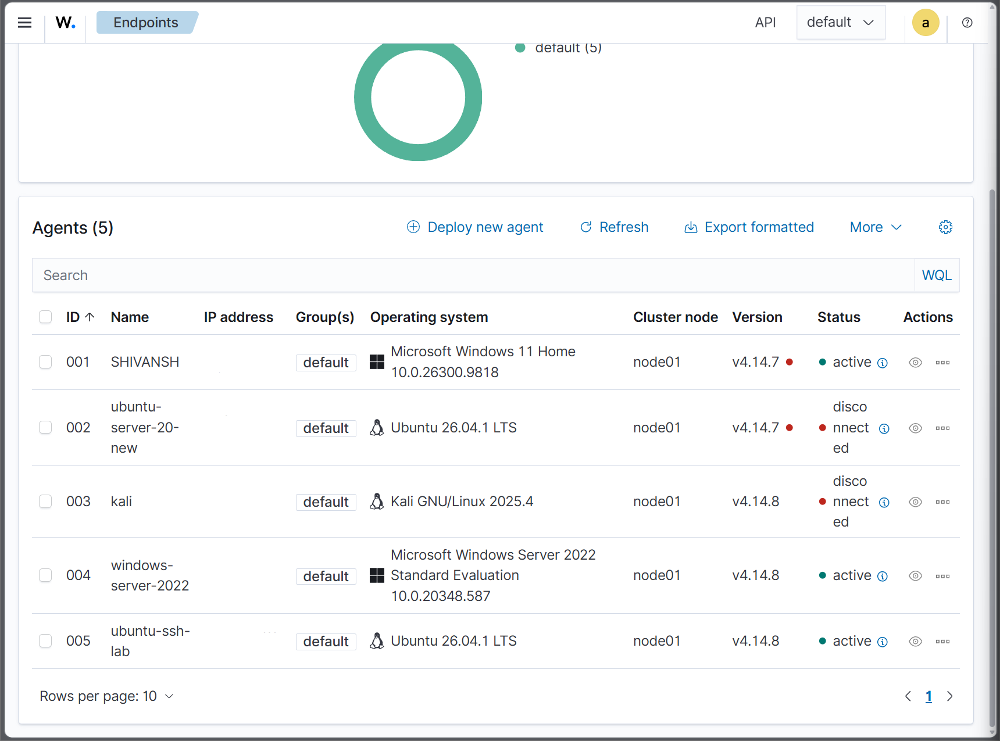

Wazuh SIEM Deployment & Endpoint Monitoring
Deployed and configured Wazuh SIEM/XDR in an isolated cybersecurity home lab to monitor Windows and Linux endpoints, collect security events, and investigate agent connectivity issues.
Project Objective
Establish centralized endpoint security monitoring across a virtualized environment using Wazuh, Ubuntu Server, Windows Server 2022, Windows 11, and Kali Linux.
Technology Stack
- Wazuh SIEM/XDR 4.14
- Proxmox VE virtualization
- Ubuntu Linux
- Microsoft Windows Server 2022
- Microsoft Windows 11
- Kali Linux
- pfSense network firewall
Deployment and Configuration
- Deployed a centralized Wazuh monitoring environment on Ubuntu.
- Registered Windows and Linux endpoints with the Wazuh manager.
- Configured endpoint monitoring and log collection.
- Verified agent services and communication with the manager.
- Reviewed agent connection status through the Wazuh dashboard.
Agent Connectivity Troubleshooting
Investigated an Ubuntu agent that appeared disconnected in the Wazuh endpoint dashboard. Checked the Linux systemd service and reviewed Wazuh agent logs.
Confirmed that the agent service was running and successfully connected to the Wazuh manager over TCP port 1514.
Result: Ubuntu endpoint connection restored and verified as Active in the Wazuh dashboard.
Deployment Evidence
The following screenshot was captured on November 9, 2026, showing five registered endpoints. Three agents were active at the time of capture. Two remained disconnected.

Skills Demonstrated
- SIEM deployment and configuration
- Windows and Linux endpoint monitoring
- Security log collection and analysis
- Linux service troubleshooting
- Agent-to-manager connectivity verification
- Technical documentation and evidence collection
Related Security Investigation
For Active Directory privileged-account monitoring, custom Wazuh detection rules, and email alerting, see the related Proxmox and Wazuh investigation.
View Active Directory Monitoring Case Study →